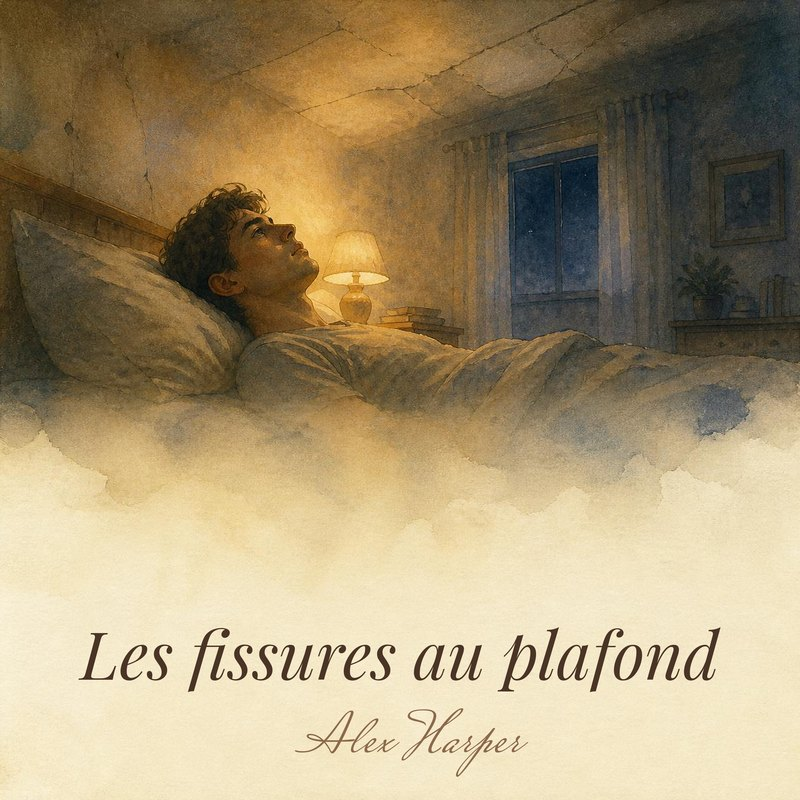

Fier de moiAlex Harper
NouveauSingle
Fier de moi
« Juste fier, une fois, simplement. »
Bientôt en entier
Chaque single s'achète en MP3 pour 0,99 € : il est à vous, à garder et à écouter sans abonnement. Vous pouvez aussi l'écouter sur Spotify, Apple Music, Deezer ou YouTube Music.
Quinze chansons sur les mots qu'on garde pour soi. L'album complet est disponible en MP3 ; les titres sortent aussi un par un en streaming.
« Juste fier, une fois, simplement. »
« Je t'aurais dit tout ça, si le silence ne pesait pas si fort. »
« C'est le portrait qu'on veut voir, un visage sans histoire. »

« Parce qu'on n'en veut pas à sa mère. Mais moi, si. »


« Bien, j'ai dit bien. Un mot si petit, un poids si grand. »
Quand on se parle encore, mais qu'on ne se dit plus rien.
L'histoire d'un amour qui n'a jamais été dit à voix haute.
Un album de Noël tendre et un peu mélancolique : la famille, les amoureux, une chaise vide à table, une rupture en décembre, et de quoi se remonter le moral quand même.
En attendant la sortie, l'album s'écoute en entier sur YouTube.
À partir de vos souvenirs, avec ma voix, et ses paroles mises en page à imprimer.
MP3 + paroles à encadrer
« Une chanson, ça ne répare rien. Mais ça dit enfin ce qu'on n'arrivait pas à dire. »
Alex Harper